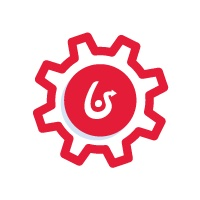
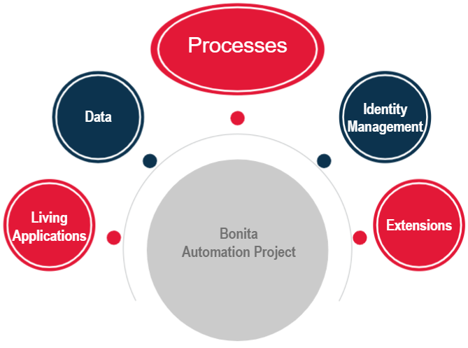
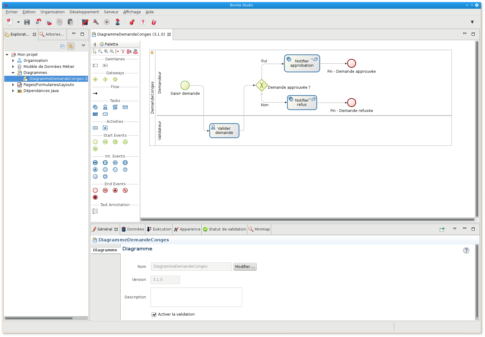
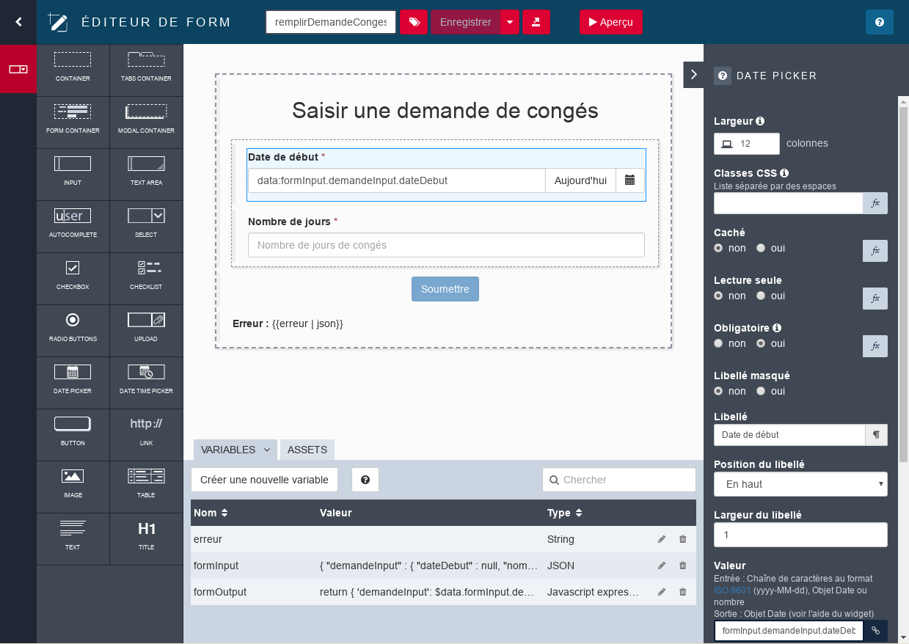
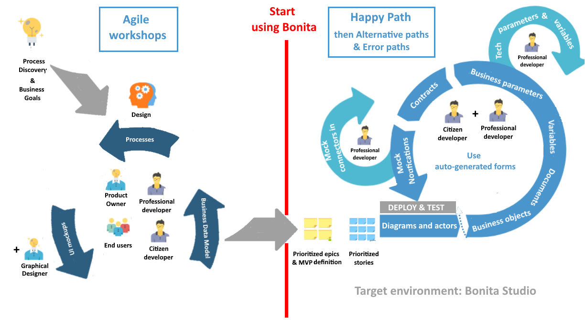
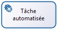
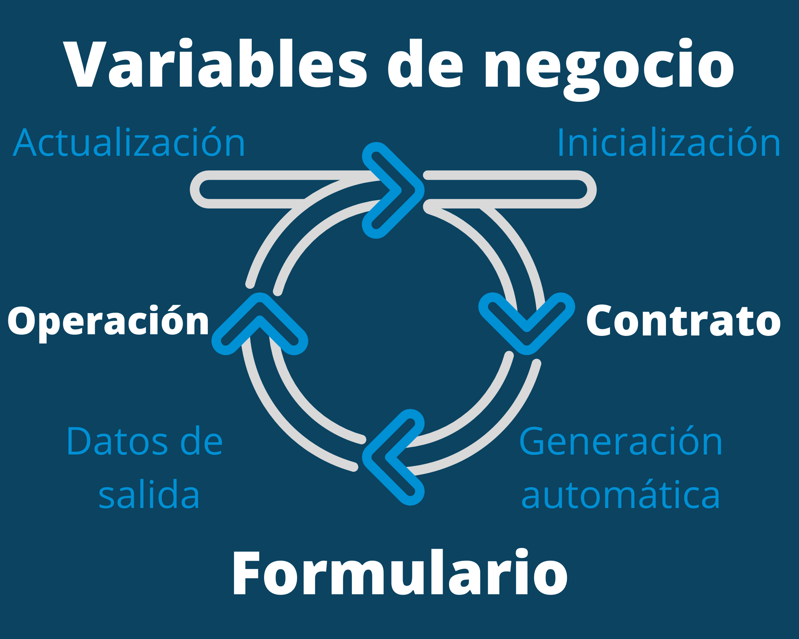

Delphine Coille
Objetivos de la sesión
¿Que? Creación de un proceso y de una primera aplicación ejecutable sólo con Bonita Edición Community
¿Quien? Equipo de proyecto y desarrolladores que empiezan con Bonita
¿Cómo? 2 sesiones interactivas con una mezcla de teoría y ejercicios prácticos
Programa
Día #1 - Crear una primera aplicación
- La solución Bonita y sus componentes
- Empezar un proyecto con Bonita
- Introducción a BPMN 2.0
- Introducción a la gestión de datos
- Interfaz de usuario (Formularios)
- Organización, actores y permisos
- Conectores
- Introducción a las aplicaciones
Programa
Día #2 - Para ir más allá en el desarrollo con Bonita
- Arquitectura de la plataforma Bonita
- Diseño y automatización de procesos
- Gestión de datos
- Extensiones
- Interfaz de usuarios
- Despliegue
Antes de empezar
- Instala la última versión del Studio
- Instala JDK 11 si hace falta
- Descargate los archivos de Bonita Camp desde GitHub: https://github.com/Bonitasoft-Community/bonita-camp/releases
- Recomendamos usar
 o
o  durante el desarrollo
durante el desarrollo
La solución Bonita
Plataforma extensible y open source para la automatización y optimización de los procesos de negocio
 volumen de código necesario para crear una aplicación
volumen de código necesario para crear una aplicación
 modelos numerosos para definir aplicaciones
modelos numerosos para definir aplicaciones
 Colaboración simplificada entre los equipos
Colaboración simplificada entre los equipos
 Permite monitorear y optimizar la ejecución de procesos
Permite monitorear y optimizar la ejecución de procesos
Resultado: aplicaciones flexibles y ampliables

Aplicación Bonita del usuario

Users tasks and cases native application

Aplicación Bonita del administrador
Native application for administration and processes follow-up

Proyecto de automatización de procesos con Bonita
Elementos prinicipales del proyecto
Componentes de Bonita
Dos componentes principales:
- Bonita Studio, el entorno de desarrollo
- Bonita Runtime, el entorno de producción
- Bonita Continuous Delivery
 , Entorno de despliegue continuo para proyectos Bonita (Ediciones de suscripción)
, Entorno de despliegue continuo para proyectos Bonita (Ediciones de suscripción)
Studio: entorno de modelización y colaboración
|  |
|
IDE basado en Eclipse
Requiere una JVM integrada en el bundle Bonita Community
Wizards y modelos para limitar el codigo
UI Designer: creación de la interfaz de usuario
|  |
|
Basado en AngularJS y Bootstrap
Funciona en el navegador
Bonita Runtime: el entorno de producción

Las aplicaciones Bonita
2 aplicaciones nativas y personalizables
2 aplicaciones CORE integradas en Bonita Runtime
- Aplicación Bonita del usuario
- Aplicación Bonita del administrador
- Aplicación Bonita del Super-administrador
 Repositorio de aplicaciones
Repositorio de aplicaciones
Ciclo de ejecución de un proyecto DPA

La primera iteración
Iniciar el proyecto: visión general
- Un proyecto Bonita esta basado en

- Acceso directo a la visión general del proyecto

Introducción a BPMN 2.0
Notación estándar para modelado de procesos. Lo esencial:
 | Pool: un pool por proceso |
| Evento de inició: el inició del proceso | |
 | Tarea humana: cuando un usuario está involucrado |
|  | Tarea / servicio automático: ejecutado por el motor |
 | Evento final: desencadena el archivo del proceso |
| → | Transiciones: se utilizan para vincular elementos |
Puertas lógicas
3 tipos de puertas lógicas:
 | Exclusivo |  |
 | Paralelo | |
 | Inclusivo |
- Las condiciones se definen en las transiciones salientes. No hay condiciones para puertas paralelas
- Una buena práctica es usar las puertas simétricamente para mejorar la legibilidad

Ejercicio 1
Modelado de proceso básico
Si aún no lo has hecho, descargua las instrucciones y correcciones desde GitHub:
https://github.com/Bonitasoft-Community/bonita-camp/releases
Los tipos de datos
Datos de proceso
- Parametros
- Documentos
- Variables
Datos de negocio
- Específicos para el proceso
- Compartidos entre todos los procesos a través la BDM (Business data model)
Modelar los datos: el modelo de datos de negocio (BDM)
- Almacena datos de negocio relacionados con procesos y/o aplicaciones
- El modelo definido de objetos para almacenar datos de negocio
- El modelo se define en el estudio Bonita
- Desde el modelo, Bonita genera clases Java (POJO) y crea las tablas en la base de datos
El modelo de datos de negocio(BDM): uso
- Declarar variables de negocio en la definición del proceso
- Crear (Create) / Leer (Read) / Actualizar (Update) / Eliminar (Delete) usando: valor predeterminado, operaciones, conectores ...
- Se puede compartir entre diferentes instancias de proceso
- Ciclo de vida controlado por el desarrollador
La gestión de datos: modelo MVC

Desacoplamiento de la lógica de negocio de las interfaces gráficas
- Modelo = BDM
- Vista = combinación de páginas de aplicaciones y formularios de proceso
- Controlador = grupo de procesos
Datos: del proceso a la interfaz de usuario
El ciclo de datos desde la inicialización hasta la actualización
Los contratos
Conjunto de parámetros de entrada requeridos y reglas de validación
Los datos enviados por los formularios deben cumplir con los contratos para:
- Instanciar un proceso
- Realizar una tarea humana
Contribuye al desacoplamiento entre la lógica empresarial y las interfaces gráficas
Exercise 2
Agregar datos y especificar contratos
La interfaz de usuario: Formularios
- Asociado con tareas o procesos
- Inicializado automáticamente en UI Designer a partir de los contratos
- Creado en el UI Designer basado en contenedores y widgets
- Basado en AngularJS y Bootstrap
La interfaz de usuario: Formularios
2 tipos de formularios:
- Formularios editables que deben cumplir un contrato
- Instanciación de procesos
- Tareas humanas
- Formulario de resumen (solo lectura) definido a nivel de pool
Ejercicio 3
Creación de formulario
¿Quién puede realizar una tarea?
Un conjunto de usuarios.
Protección contra acceso concurrente:
- Necesidad que el usuario se autentique
- El usuario debe estar registrado en la base de datos Bonita
- Noción de candidato et assignado a una tarea
Soporte para: LDAP, Active Directory, SAML V2, CAS, Kerberos incluidos en la edición Enterprise
Actores en el proceso
Para definir quién puede hacer una tarea
Estos actores se asociarán entonces a la organización definida según:
- Grupos
- Roles
- Usuarios
Actores
- Declarar uno o más actores en la definición del proceso (solo un nombre)
- Configurar para asociar al actor con los usuarios:
- Directamente a un conjunto determinado de usuarios
- Indirectamente a través de grupos y roles
- Asociar a los actores directamente con la tarea o a través de un carril (lane)
- Los actores no pueden usar datos "en vivo"
¿Quién puede iniciar una instancia de proceso?
All users associated with the actor with "initiator" flag
Only one actor on a given process definition has this flag
For a given process instance the user who start it will be registered as the initiator of the instance
Perfiles y aplicaciones
Los perfiles definen el acceso y la navegación en las aplicaciones Living, a los objetos y atributos de la BDM
3 perfiles por defecto en Bonita:
- Usuario
- Administrador
- Gerente de proceso (sólo para las ediciones de Suscripción)
Posibilidad de definir perfiles personalizados (sólo ediciones de suscripción)
Perfiles: funcionamiento

Ejercicio 4
Configurar actores
Extensiones en Bonita
Permiten que un proceso interactúe con el SI
Centralizadas en el gestor de extensiones de Bonita Studio

Connectores
Interacción con el SI opuesta a la de las API de Bonita
Se coloca al principio o al final de un proceso o de una tarea
Se proporciona un catálogo de conectores estándar en Bonita Studio
Los conectores personalizados pueden ser:
- Implementados en el estudio o un IDE de Java
- Importados de nuestro sitio de la comunidad
Ejercicio 5
Notificación a través de un connector
Aplicaciones basadas en BPM
Combina diferentes procesos juntos para proporcionar una aplicación de negocio rica y consistente
Las aplicaciones son implementadas y renderizadas por la aplicación del administrador Bonita
Se componen de muchos elementos, entre ellos:
- Formularios
- Páginas
- Layout
- Temas
Desplegar desde Bonita Studio
El descriptor de la aplicación se utiliza para definir toda la estructura de la aplicación.
- Formularios
- Páginas
- Layout
- Temas
El layout y el tema son personalizables y se pueden desplegar desde el estudio.
Ejercicio 6
Creer y desplegar una aplicación simple de gestión de solicitudes de vacaciones
Gracias por su atención
¿Alguna pregunta?
Mañana - ir más alla en el desarrollo con Bonita
- Arquitectura de la plataforma Bonita
- Diseño y automatización de procesos
- Gestión de datos
- Extensiones
- Interfaz de usuarios
- Despliegue